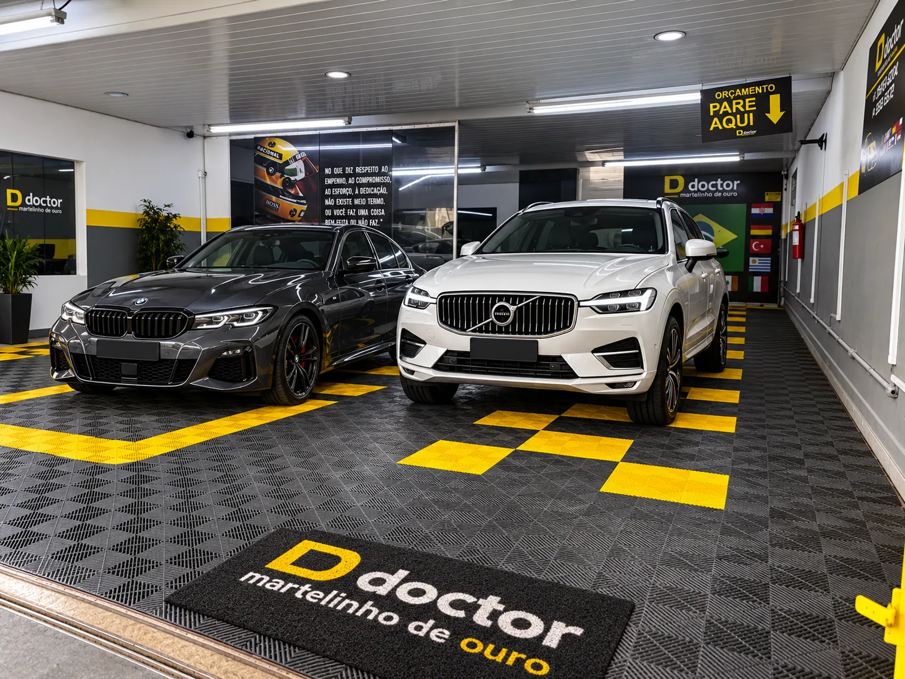
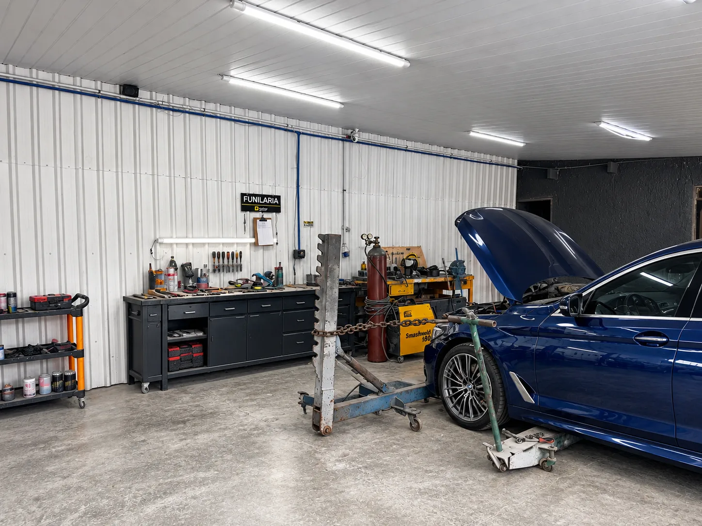
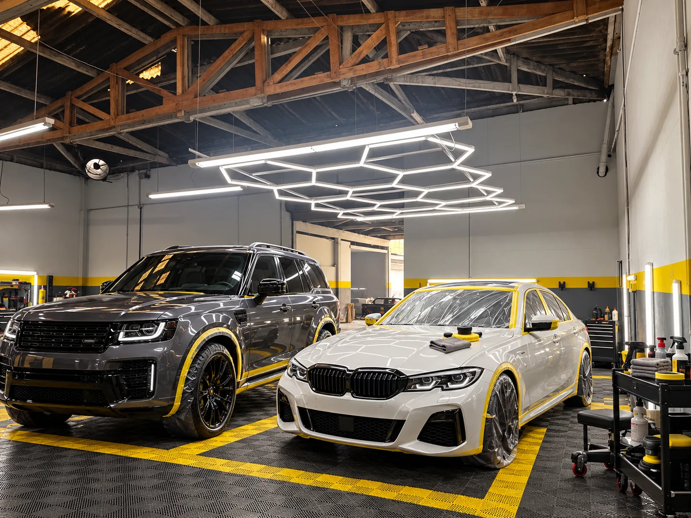
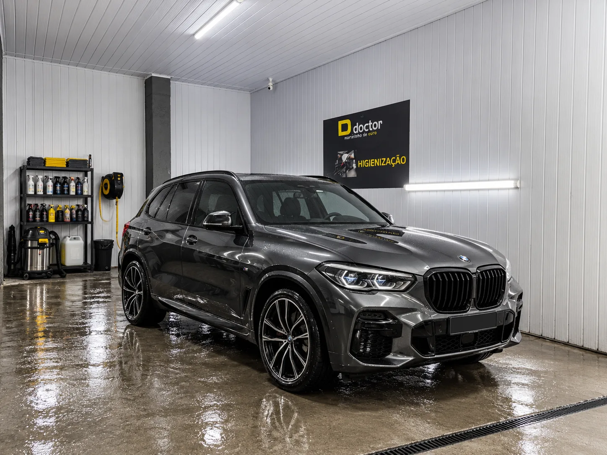

Martelinho de ouro.
Reparação automotiva premium, com experiência internacional em mais de 15 países.
doctormartelinho de ouro
Reparação automotiva premium, com experiência internacional em mais de 15 países.
O carro é avaliado na recepção, de frente para você, antes de qualquer serviço.
Agendar avaliação presencialAmassados e pequenos danos corrigidos pela técnica do martelinho de ouro, preservando a pintura original.
A pintura volta a refletir como espelho, trabalhada sob uma luz que não esconde nada.
Interior e exterior limpos a fundo, superfície por superfície.
Quatro frentes, uma oficina. Da avaliação à entrega, cada etapa acontece em uma baia própria, com a luz e as ferramentas certas para o serviço.
Reparo de amassados e pequenos danos com a técnica do martelinho de ouro, sem repintar o painel.
Correção de riscos e marcas da pintura, com acabamento espelhado sob luz de inspeção.
Limpeza profunda do interior e do exterior, em baia dedicada e com produtos para cada superfície.
Atendimento a carros encaminhados por seguradora, com acompanhamento do orçamento à aprovação.
No que diz respeito ao empenho, ao compromisso, ao esforço, à dedicação, não existe meio termo. Ou você faz uma coisa bem feita ou não faz.
Fachada, recepção, baias e pátio. Estas são as fotos do lugar onde o seu carro vai ficar.



